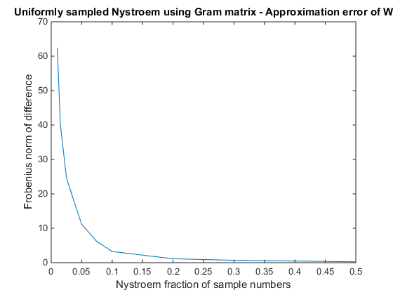
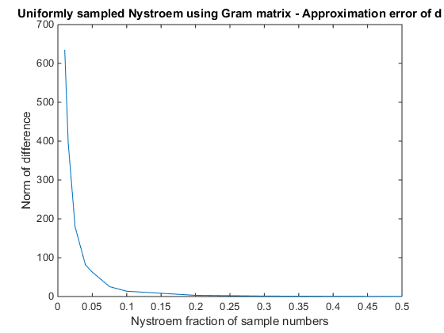
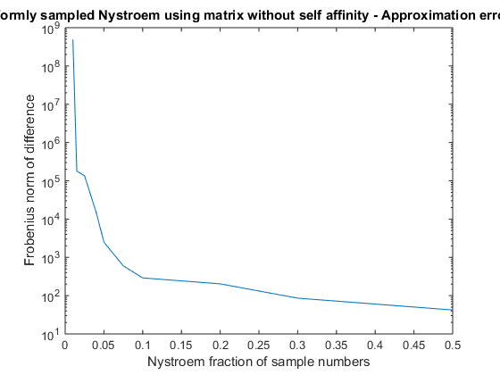
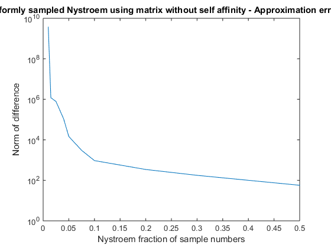
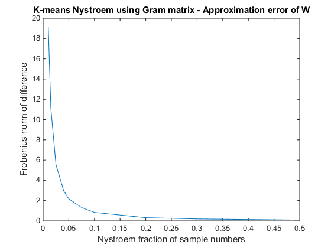
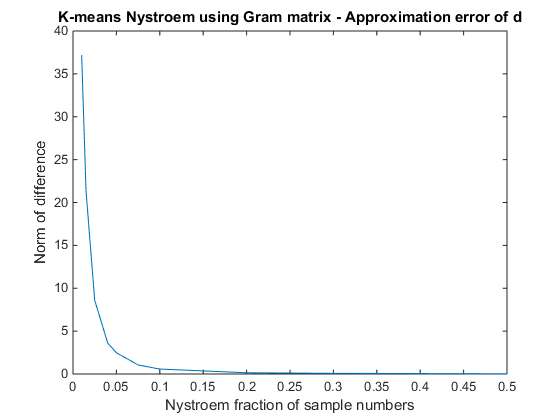
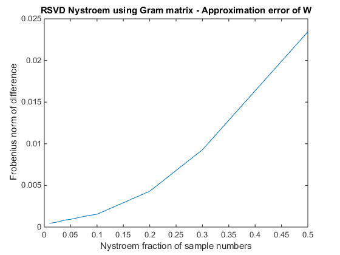
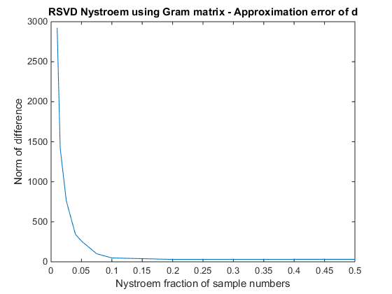

Contents
- Test the quality of approximation for different algorithms
- 0. Setup parameters
- 1. Setup tests
- 2. Compare Nystroem precisions
- 2.1 Uniformly sampled Nystroem approximation of W_1
- 2.2 Uniformly sampled Nystroem approximation of W_2
- 2.3 K-Means Nystroem approximation of W_1
- 2.4 K-Means Nystroem approximation of W_2
- 2.5 Randomized SVD approximation of W_1
- Plot results
- Errors for uniform sampling with Gram matrix with self affinity.
- Errors for uniform sampling using matrix without self affinity.
- Errors for K-means Nystroem using Gram matrix.
- Errors for randomised SVD Nystroem method
Test the quality of approximation for different algorithms
This script tests two Nystroem methods (1) and also examines the precision of the normalisation factor approximation algorithm used in our code (2).
The tested Nystroem methods are
- Uniformly sampled Nystroem method
- K-means Nystroem method
Both methods are tested using project data (`hsi`).
The test scenario is as following: Both methods are used to approximate
- a kernel matrix W with self affinity
- a kernel matrix W without self affinity
and
- the normalisation factors for the whole kernel matrix using Nystroem approximation
The norm of the difference between approximation and reference.
clc, clear, close all;
0. Setup parameters
load hsi; n = 1000; sigma = 0.3; runs = 0.5e2; m_fraction_array = [1e-2, 1.5e-2, 2.5e-2, 4e-2, 5e-2, 7.5e-2, 1e-1, 2e-1, 3e-1, 5e-1]; m_array = ceil(m_fraction_array * n); [n1, n2, d] = size(hsi); X_all = reshape(hsi, [n1*n2 d]); X = X_all(1:n,:); clear hsi; clear X_all; error_W_U1 = zeros(1, length(m_array)); error_d_U1 = zeros(1, length(m_array)); error_S_U1 = zeros(1, length(m_array)); error_W_U2 = zeros(1, length(m_array)); error_d_U2 = zeros(1, length(m_array)); error_S_U2 = zeros(1, length(m_array)); error_W_K1 = zeros(1, length(m_array)); error_d_K1 = zeros(1, length(m_array)); error_S_K1 = zeros(1, length(m_array)); error_W_K_alt = zeros(1, length(m_array)); error_d_K_alt = zeros(1, length(m_array)); error_S_K2 = zeros(1, length(m_array)); error_W_R1 = zeros(1, length(m_array)); error_d_R1 = zeros(1, length(m_array));
1. Setup tests
W_1 = exp(-sqdist(X.', X.') / (2*sigma^2)); d_n_1 = sum(W_1, 2) - 1; S_1 = zeros(size(W_1)); for i=1:size(S_1, 1) for j=1:size(S_1, 2) S_1(i,j) = W_1(i,j) / (sqrt(d_n_1(i)) * sqrt(d_n_1(j))); end end W_2 = W_1 - diag(diag(W_1)); d_n_2 = sum(W_2, 2); S_2 = zeros(size(W_2)); for i=1:size(S_2, 1) for j=1:size(S_2, 2) S_2(i,j) = W_2(i,j) / (sqrt(d_n_2(i)) * sqrt(d_n_2(j))); end end
2. Compare Nystroem precisions
for l=1:length(m_array) for r=1:runs
m = m_array(l);
2.1 Uniformly sampled Nystroem approximation of W_1
mIDX = randsample(n, m);
[V_mm, Lambda_mm] = eig(W_1(mIDX,mIDX));
V_tilde = sqrt(m/n) * W_1(:,mIDX) * (V_mm * Lambda_mm^-1);
Lambda_tilde = (n/m) * Lambda_mm;
W_1_tilde = V_tilde * Lambda_tilde * V_tilde.';
d_1_tilde = sum(V_tilde, 1) * Lambda_tilde * V_tilde.';
d_1_tilde = d_1_tilde - 1;
% errors
error_W_U1(l) = error_W_U1(l) + norm(W_1 - W_1_tilde, 'fro');
error_d_U1(l) = error_d_U1(l) + norm(d_n_1(:) - d_1_tilde(:));
2.2 Uniformly sampled Nystroem approximation of W_2
[V_mm, Lambda_mm] = eig(W_2(mIDX,mIDX));
V_tilde = sqrt(m/n) * W_2(:,mIDX) * (V_mm * Lambda_mm^-1);
Lambda_tilde = (n/m) * Lambda_mm;
W_2_tilde = V_tilde * Lambda_tilde * V_tilde.';
d_2_tilde = sum(V_tilde, 1) * Lambda_tilde * V_tilde.';
error_W_U2(l) = error_W_U2(l) + norm(W_2 - W_2_tilde, 'fro');
error_d_U2(l) = error_d_U2(l) + norm(d_n_2(:) - d_2_tilde(:));
2.3 K-Means Nystroem approximation of W_1
[idx, center, m] = eff_kmeans(X, m, 5);
W = exp(-sqdist(center.', center.') / (2*sigma^2));
E = exp(-sqdist(X.', center.') / (2*sigma^2));
[Ve, Va] = eig(W);
va = diag(Va);
pidx = find(va > 1e-6);
inVa = sparse(diag(va(pidx).^(-0.5)));
G = E * Ve(:,pidx) * inVa;
W_1_tilde = G * G.';
d_1_tilde = sum(G, 1) * G.' - 1;
%Alternative
V_nm = E * Ve(:,pidx);
W_1_tilde_alt = V_nm * sparse(diag(va(pidx).^-1)) * V_nm.';
d_1_tilde_alt = sum(V_nm, 1) * sparse(diag(va(pidx).^-1)) * V_nm.' - 1;
error_W_K1(l) = error_W_K1(l) + norm(W_1 - W_1_tilde, 'fro');
error_d_K1(l) = error_d_K1(l) + norm(d_n_1(:) - d_1_tilde(:));
error_W_K_alt(l) = error_W_K_alt(l) + norm(W_1 - W_1_tilde_alt, 'fro');
error_d_K_alt(l) = error_d_K_alt(l) + norm(d_n_1(:) - d_1_tilde_alt(:));
2.4 K-Means Nystroem approximation of W_2
Does not make sense.
2.5 Randomized SVD approximation of W_1
p = 10; q = 2;
k=ceil(0.1*m);
[U,D, e] = rnys(W_1,k,m,mIDX,p,q);
d_1_R = sum(U) * D * U.';
error_W_R1(l) = error_W_R1(l) + e;
error_d_R1(l) = error_d_R1(l) + norm(d_n_1(:) - d_1_R(:));
end end error_W_U1 = error_W_U1 / runs; error_d_U1 = error_d_U1 / runs; error_W_U2 = error_W_U2 / runs; error_d_U2 = error_d_U2 / runs; error_W_K1 = error_W_K1 / runs; error_d_K1 = error_d_K1 / runs; error_W_K_alt = error_W_K_alt / runs; error_d_K_alt = error_d_K_alt / runs; error_W_R1 = error_W_R1 / runs; error_d_R1 = error_d_R1 / runs;
Plot results
Errors for uniform sampling with Gram matrix with self affinity.
First matrix norm for W approximation:
figure, plot(m_fraction_array, error_W_U1); xlabel('Nystroem fraction of sample numbers'); ylabel('Frobenius norm of difference'); title('Uniformly sampled Nystroem using Gram matrix - Approximation error of W'); snapnow; % Then error for the approximation of d: figure, plot(m_fraction_array, error_d_U1); xlabel('Nystroem fraction of sample numbers'); ylabel('Norm of difference'); title('Uniformly sampled Nystroem using Gram matrix - Approximation error of d'); snapnow; 
Errors for uniform sampling using matrix without self affinity.
First matrix norm for W approximation:
figure, semilogy(m_fraction_array, error_W_U2); xlabel('Nystroem fraction of sample numbers'); ylabel('Frobenius norm of difference'); title('Uniformly sampled Nystroem using matrix without self affinity - Approximation error of W'); snapnow; % Then error for the approximation of d: figure, semilogy(m_fraction_array, error_d_U2); xlabel('Nystroem fraction of sample numbers'); ylabel('Norm of difference'); title('Uniformly sampled Nystroem using matrix without self affinity - Approximation error of d'); snapnow; 
Errors for K-means Nystroem using Gram matrix.
First matrix norm for W approximation:
figure, plot(m_fraction_array, error_W_K_alt); xlabel('Nystroem fraction of sample numbers'); ylabel('Frobenius norm of difference'); title('K-means Nystroem using Gram matrix - Approximation error of W'); snapnow; % Then error for the approximation of d: figure, plot(m_fraction_array, error_d_K_alt); xlabel('Nystroem fraction of sample numbers'); ylabel('Norm of difference'); title('K-means Nystroem using Gram matrix - Approximation error of d'); snapnow; 
Errors for randomised SVD Nystroem method
First matrix norm for W approximation:
figure, plot(m_fraction_array, error_W_R1); xlabel('Nystroem fraction of sample numbers'); ylabel('Frobenius norm of difference'); title('RSVD Nystroem using Gram matrix - Approximation error of W'); snapnow; % Then error for the approximation of d: figure, plot(m_fraction_array, error_d_R1); xlabel('Nystroem fraction of sample numbers'); ylabel('Norm of difference'); title('RSVD Nystroem using Gram matrix - Approximation error of d'); snapnow; beep; 